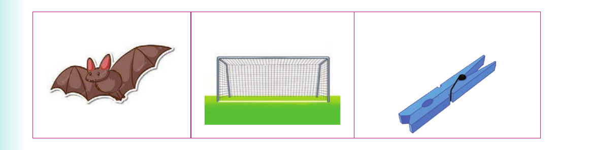

Using different sounds - final sounds

(d) (e) (f)
3. Pronounce the last sound in each word of the following pairs. Then, read the words aloud. Or finger spell the last letters in each word. Then, sign the words. Example: goat-goal (a) bat-bad (b) pod-pot (c) card-cart (d) cup-cub (e) fan-fat (f) nap-nab
4. Read aloud or sign the following sentences: (a) The goat is near the goal. (b) A big bad-looking bat hit my face. (c) The card is in the cart. (d) We met a fat boy who had a fan.